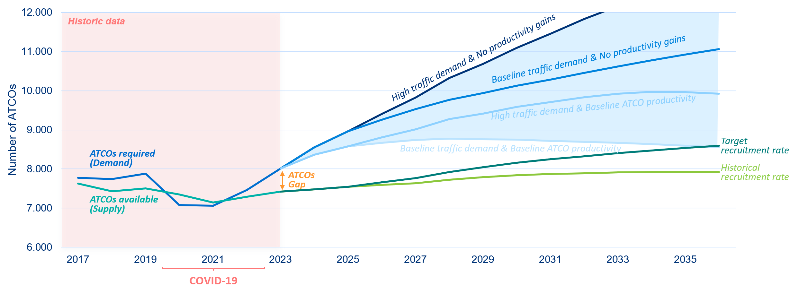

Scenarios, sensitivity and uncertainty
Scenarios examine alternative assumptions. Sensitivity analysis tests how changes in individual variables and selected combinations affect the projected ATCO gap.
Demand and recruitment scenarios
The first step of the root-cause analysis is to establish a quantitative understanding of the current and future European ATCO workforce situation. To do so, the supply-demand model is used to estimate the relationship between ATCO demand and ATCO supply under a range of alternative scenarios (assumptions are developed in model specification), allowing the sensitivity of the workforce balance to different assumptions to be assessed.
The chart presents the range of future ATCO workforce outcomes considered most plausible for the purposes of this study. The scenarios combine baseline traffic demand assumptions with the no productivity gains and historical recruitment rate trajectories, thereby defining a realistic range of potential workforce requirements over the projection period and illustrating the corresponding evolution of the ATCO gap.

Historical data show that ATCO availability was already insufficient to fully meet workforce requirements until the COVID-19 period, when the collapse in traffic temporarily reduced demand. However, the subsequent recovery rapidly re-established the imbalance between workforce demand and workforce supply, creating a structural shortage across the European ATM network.
The projected evolution of demand is highly dependent on productivity assumptions. Under the No Productivity Gains scenario, workforce requirements continue to increase throughout the projection period, eventually exceeding 11,000 ATCOs by 2036.
The assumptions represented in the chart were selected because they provide the most realistic reference case for assessing the future evolution of the ATCO gap. The Historical Recruitment Rate reflects the recruitment levels currently achieved across the European ATM network and therefore represents the continuation of current workforce trends. Similarly, the Baseline Traffic Demand scenario is consistent with the traffic assumptions commonly used for planning purposes and provides a reasonable representation of expected network growth.
The No Productivity Gains assumption requires additional explanation. Whilst more optimistic productivity scenarios were also assessed as part of the modelling exercise, their realisation would depend on the sustained delivery of productivity improvements over an extended period. As no major technological, operational or organisational developments are currently expected, the ATCO productivity is not expected to fundamentally change within the study horizon. As a result, assuming no material productivity gains provides a prudent and realistic baseline against which future workforce requirements can be assessed.
Consequently, the chart should not be interpreted as a worst-case scenario, but rather as the continuation of current recruitment and productivity trends under reasonable traffic growth assumptions, as no disruptive technological, operational or regulatory developments emerge during the projection period that would significantly change the trends. Under these conditions, the existing ATCO gap not only persists but continues to widen throughout the projection period, indicating that the imbalance is unlikely to resolve naturally in the absence of additional interventions.
The following figure expands the reference case presented in the chart by introducing alternative traffic demand, productivity and recruitment assumptions. Together, these scenarios illustrate the range of workforce outcomes that could arise under different combinations of traffic growth, productivity performance and recruitment activity. This allows the relative influence of each assumption on the future ATCO gap to be assessed and provides an indication of the conditions required to restore long-term balance between ATCO demand and supply.

The chart highlights the combined influence of traffic demand, productivity and recruitment on the future workforce balance. Under all scenarios, the European ATM network enters the projection period with a significant workforce deficit, which becomes most acute during the 2027-2028 period as traffic growth continues to outpace workforce expansion.
The analysis confirms that the ATCO shortage is not expected to disappear in the short term under any of the scenarios considered. Even under favourable assumptions regarding workforce growth and productivity improvements, the workforce gap persists for a substantial part of the projection horizon before gradually narrowing.
The only scenario in which the gap narrows sufficiently to close 2036 is the combination of Baseline Traffic Demand and Baseline Productivity with Target Recruitment Rates. However, this outline relies on a combination of assumptions that are themselves optimistic, as analysed previously.
The analysis also shows that higher traffic growth is sufficient to prevent the gap from closing, even when these favourable productivity assumptions are maintained. Under the High Traffic Demand scenario, the workforce imbalance remains present throughout the projection period despite the productivity gains assumed under the Baseline Productivity scenario. This highlights the extent to which future workforce availability remains exposed to traffic growth.
The most important conclusion is therefore not whether the gap eventually closes under a specific scenario, but that doing so requires the simultaneous realisation of multiple favourable conditions across both the demand and supply sides of the workforce balance. Any delay in improving workforce availability, any shortfall in productivity growth or any increase in traffic demand beyond baseline assumptions results in the gap persisting beyond the end of the projection period.
The period around 2027-2028 emerges as particularly critical. Even under the most favourable combinations of assumptions, the shortage intensifies before gradually improving. Consequently, the analysis suggests that maintaining current trends is unlikely to be sufficient. If the future workforce imbalance is to be reduced, measures affecting both workforce supply and operational efficiency need to be implemented rapidly, as missed opportunities or delayed action are likely to result in the shortage persisting throughout the study horizon.
To isolate the effect of productivity assumptions, the following figure assumes baseline traffic demand and compares alternative productivity and recruitment scenarios.

It should be noted that the productivity scenarios are not forecast, but analytical assumptions intended to test the sensitivity of workforce demand to different productivity trajectories. The Baseline Productivity, SESAR Productivity and High Productivity scenarios are derived either from historical observations or from published European planning assumptions and are used to illustrate a range of potential outcomes rather than predict a specific future level of productivity.
It should, however, be recognised that all productivity scenarios are inherently uncertain. Future technological developments, operational concepts and automation capabilities may generate productivity gains beyond those currently anticipated. Equally, productivity growth may slow if the most accessible efficiency improvements have already been realised. In practice, and assuming that no disruptive technological breakthrough dramatically alters the controller role, the most plausible outcome is likely to lie between the No Productivity Gains and Baseline Productivity scenarios.
Under the Baseline Productivity scenario, workforce demand initially increases as traffic continues to recover and grow, peaking around 2028 before stabilising at about the same level for the remainder of the projection period. In other words, if historical productivity improvements were sustained over the long term, they would broadly compensate for future traffic growth, although not sufficiently to eliminate the existing workforce imbalance.
However, one notable result is that the difference between the Baseline Productivity and SESAR Productivity scenarios remains comparatively limited. Despite the additional productivity gains assumed under the SESAR scenario, the demand trajectories remain relatively close throughout the projection horizon. This suggests that the baseline productivity assumption already captures a significant proportion of the productivity improvements expected under currently foreseeable operational and technological developments. At the same time, it indicates that the baseline scenario is underpinned by the continuation of the strong productivity growth observed historically, an assumption that is not realistic over the longer term.
Productivity improvements generally become more difficult to achieve over time, as the most accessible efficiency gains are typically realised first. Consequently, sustaining historical productivity growth rates over extended periods requires continuous operational, organisational and technological effort. Consequently, it is concluded that, if productivity improvements materialise, they are likely to be limited in magnitude. For this reason, the No Productivity Gains scenario was included and is considered the most realistic reference case. As seen in the chart, under this scenario, the existing ATCO gap not only persists but continues to widen over time, indicating that the current workforce imbalance is unlikely to resolve naturally and may become increasingly challenging if no corrective measures are implemented.
Reference case and sensitivity results
In addition to understanding the root causes of workforce shortages, it is necessary to assess which interventions have the greatest potential to reduce the future ATCO gap. Since each challenge and solution identified throughout the study ultimately affects one or more variables of the supply-demand model, understanding the relative importance of these variables provides an objective basis for prioritising solutions and recommendations.
Sensitivity analysis identifies which model variables most influence the projected ATCO gap and where interventions could have the greatest effect.
To assess the relative influence of the model variables on the future ATCO gap, it is first necessary to define a common reference case against which all sensitivity tests can be compared.
The reference case corresponds to the baseline traffic scenario, baseline ATCO productivity scenario and the continuation of the historical recruitment rate observed. The resulting workforce demand, workforce supply and other principal model parameters are summarised in the following table. It is important to highlight that this reference case is not considered the most likely scenario, nor does it represent the study team’s expectations. It is a central case, which already assumes that ANSPs take corrective actions and introduce some measures to address the ATCO gap. This better serves the purpose of illustrating the effect of each variable by comparing equivalent modifications over a reference.
Reference case parameters of the sensitivity analysis (Source: Consortium assessment)
| Parameter | Value | Notes |
|---|---|---|
| ATCO demand, 2036 | 8,557 | Baseline productivity, base traffic |
| ATCO supply, 2036 | 7,928 | Observed recruitment rate maintained |
| ATCO gap, 2036 | 629 | Demand - supply |
| Pipeline output | 384 /year | Newly endorsed controllers entering OPS |
| Training capacity ceiling | ANSP-specific | 818 / year in aggregate across the network |
| Training duration | ANSP-specific | 27 months on a weighted average basis |
| Success rate | ANSP-specific | 75.3% on a weighted average basis |
| Attrition rate | 1.69% | Applied to the operational stock |
The reference case serves solely as a benchmark for the sensitivity analysis. The effect of each variable is assessed relative to this scenario, allowing the contribution of different workforce, training and operational factors to be compared on a consistent basis.
The variables included in the model affect the ATCO gap in different ways. Understanding these differences is important for interpreting the sensitivity analysis, as not all variables have the same type or timing of effect. Three main mechanisms can be distinguished.
- Multiplicative variables (demand side): ATCO demand is calculated by dividing the number of flight hours controlled by productivity, maximum staff hours and utilisation, as explained in model specification. These three variables therefore directly influence the number of controllers required. For example, higher productivity means that each controller can handle more traffic, reducing the number of controllers needed. The same applies to maximum staff hours and utilisation. The effect is not fully symmetrical, meaning that a decrease in one of these variables increases the workforce requirement by more than an equivalent increase reduces it.
- Flow variables (supply side): Intake, training success rate and attrition affect the number of controllers entering and leaving the operational workforce each year. Their impact therefore builds up over time. An increase in intake or training success rate results in more controllers eventually reaching operations, while higher attrition reduces the workforce. However, these changes do not have an immediate effect, as new recruits need to complete the training process before becoming ATCOs.
- Training process variables: Training capacity and training duration determine how effectively new recruits can progress through the training process. Training capacity limits the number of trainees that can be processed, meaning that increasing intake or training success rate will have a limited effect if sufficient training capacity is not available. Training duration also determines how quickly recruits can reach operations and, in the model, affects the number of trainees that can be processed through a given number of training places. Reducing training duration can therefore improve the speed of the pipeline, although it does not by itself increase the number of controllers if other constraints remain unchanged.
Functional classification of the model variables (Source: Consortium assessment)
| Variable | Side | Mechanism | Effect over time |
|---|---|---|---|
| ATCO productivity | Demand | Multiplicative | Immediate |
| Utilisation | Demand | Multiplicative | Immediate |
| Maximum staff hours | Demand | Multiplicative | Immediate |
| Intake | Supply | Flow (inflow) | Cumulative, lagged |
| Success rate | Supply | Flow (inflow) | Cumulative, lagged |
| Attrition | Supply | Flow (outflow) | Cumulative |
| Training capacity | Supply | Ceiling | Conditional |
| Training duration | Supply | Delay and ceiling | Conditional |
Not all model variables are equally actionable. Flight hours controlled is determined by traffic demand and therefore lies outside the control of ANSPs. It drives the demand side of the model but cannot be used as a lever. On the supply side, the same applies to retirements and the existing stock of controllers already in operations, which are governed by the current workforce's age structure rather than by present-day decisions. These variables are essential for quantifying the gap, but the sensitivity analysis that follows focuses on the variables that ANSPs, or, where relevant, regulators, can influence.
The following table presents the change in the ATCO gap in 2036 resulting from a uniform variation of ±10% in each variable, assessed individually while all other variables are maintained at their reference values. Positive and negative values in the first two columns represent, respectively, a 10% increase and a 10% decrease in the corresponding variable. The resulting values indicate the associated change in the ATCO gap, where positive values correspond to a widening of the gap and negative values correspond to a reduction of the gap.
Not all variables included in the supply-demand model are suitable candidates for intervention. Controlled flight-hours are determined by traffic demand and therefore lie outside the direct control of ANSPs. Similarly, the number of current ATCOs in operations reflects the existing workforce available at the start of the projection period and cannot be modified through current workforce, training or operational measures. Consequently, the sensitivity analysis focuses on the variables that can be influenced through organisational, regulatory, training or operational interventions.
Change in the ATCO gap in 2036 under a uniform ±10% variation of each model variable (Source: Consortium assessment)
| Variable | -10% | +10% | % of gap | Interpretation |
|---|---|---|---|---|
| ATCO productivity | +950 | −778 | +152% / −124% | Strongest controllable lever |
| Utilisation | +950 | −778 | +152% / −124% | Bounded by safety and rostering |
| Maximum staff hours | +950 | −778 | +152% / −124% | Bounded by law and agreements |
| Intake | +359 | −359 | +57% / −57% | Cumulative, lagged |
| Success rate | +359 | −359 | +57% / −57% | Cumulative, lagged |
| Attrition | −110 | +108 | −18% / +17% | Retention effect |
| Retirements | −110 | +108 | −18% / +17% | Retention effect |
| Training capacity | - | - | - | Indirect; conditions the above |
| Training duration | - | - | - | Indirect; conditions the above |
The table reports the change in the ATCO gap in 2036 resulting from a uniform variation of ±10% in each controllable variable, assessed individually and with all other parameters maintained at their reference values. Although the same relative variation is applied to all variables, a 10% change does not necessarily imply the same level of implementation effort in practice. The results should therefore be interpreted as a measure of relative influence on the ATCO gap rather than as a comparison of implementation feasibility.
The results are best understood in relation to the size of the projected gap. Under the reference case, the model estimates a demand of 8,553 controllers and a supply of 7,928 controllers in 2036, resulting in a gap of 629 ATCOs Again, these figures do not represent a most likely outcome, nor are they indicative of the study’s expectations regarding the evolution of the ATCO gap: they are simply a theoretical central case, used for illustration purposes. Against this benchmark, the analysis shows that the demand-side variables exert the strongest influence on the projected workforce imbalance. A 10% change in ATCO productivity, utilisation or maximum staff hours modifies the gap by approximately 800 to 950 ATCOs, exceeding the size of the projected gap itself.
The demand-side variables have a stronger effect than the supply-side variables because they affect the productivity of the entire operational workforce. By contrast, changes in intake and success rate affect only the additional controllers progressing through the training process and therefore materialise progressively over time as new cohorts complete training. As a result, maintaining current levels of productivity and utilisation is at least as important as increasing workforce inflows, since deterioration in either variable can rapidly offset the benefits of recruitment and training efforts.
Among the supply-side variables, intake and success rate exhibit the largest influence on the projected gap, whilst attrition has a comparatively limited effect. This is largely explained by the relatively low attrition levels observed across the workforce. Consequently, measures targeting workforce retention may contribute to workforce stability and knowledge preservation, but are unlikely on their own to produce substantial reductions in the projected gap.
ATCO productivity, utilisation, maximum staff hours, intake and training success rates provide the principal quantitative basis for assessing and prioritising solutions.
Training capacity and duration as enabling conditions
Training capacity and duration act as enabling conditions. Under the model’s reference assumptions, changing either one, or both together while holding other variables fixed, does not directly change the projected ATCO gap. The sensitivity table therefore reports no individual values for these variables.
This result reflects the nature of these variables within the model: training capacity acts as a constraint on the maximum number of trainees that can progress through the pipeline, whilst training duration determines the time required for trainees to reach operational service.
The absence of a direct effect is itself an important finding. It indicates that, at European level, the training system is not currently operating at its maximum capacity under the reference assumptions. Consequently, increasing training capacity or reducing training duration in isolation does not generate additional ATCOs and therefore does not directly alter the ATCO gap.
However, both variables influence the extent to which improvements in other supply-side variables can be translated into additional ATCOs. Their effect therefore becomes visible only when they are combined with changes in intake or success rate, the two variables directly responsible for generating new ATCOs.
To assess this interaction, additional simulations were performed combining a 10% increase in training capacity or a 10% reduction in training duration, and a 10% increase in either intake or success rate. The results show three main findings:
- Training capacity and training duration produce almost identical effects, differing by only one ATCO in 2036;
- A 10% improvement in either variable is not sufficient to eliminate the projected ATCO gap by 2036; and
- Combining these improvements with increases in success rate produces a greater reduction in the gap than combining them with equivalent increases in intake.
More specifically, a 10% increase in success rate reduces the projected 2036 gap by approximately 518 ATCOs, while the same increase in intake reduces it by approximately 328 ATCOs.
These findings suggest that training capacity and training duration should primarily be viewed as enabling conditions rather than direct levers. Their value lies in supporting improvements elsewhere in the training process, particularly in conjunction with measures that increase training success rates. From a policy perspective, this indicates that solutions affecting success rate, together with training capacity and training duration, offer the strongest potential to increase the effectiveness of the ATCO training process and reduce future workforce shortages.